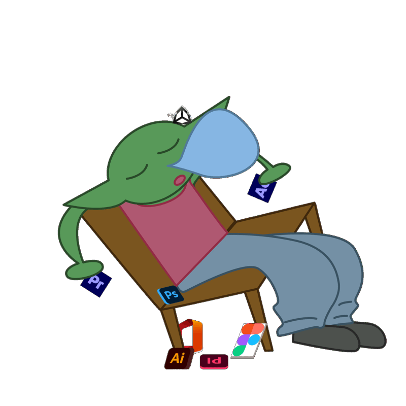

Santiago Salamanca Arroyo
Sobre mí
Formación
Estoy estudiando Diseño Transmedia en la universidad La Salle.
He realizado dos cursos de ilustración.
Manejo programas del paquete de Adobe y manejo los programas del paquete de Microsoft. Sé usar Figma. Tengo conocimientos en manejo de herramientas de producción de vídeo.
Experiencia
Un año como becario en la Escuela de Posgrado de La Salle (principalmente editando vídeos para redes).
Un año como becario en la Factoría de La Salle (principalmente editando vídeos para redes y haciendo gestión de las mismas).
Intereses
Soy una persona a la que le encanta el mundo de la animación, el contar historias, la ilustración y la producción de vídeo. Trabajo bien en equipo, me adapto bien y aprendo rápido.

Proyectos
Contacto
- Número: +34 689 307 155
- Correo: santiagosalamanca2024@gmail.com
- Instagram: @piojo.dibujitos
Haz clic en un dato para seleccionarlo y cópialo con Ctrl+C (Cmd+C en Mac).